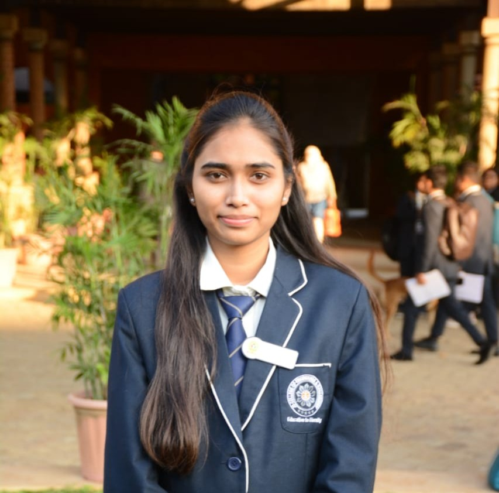

RESUME

Aachal Katkar
Address: Ward No. 1, At Post Ubali, Tah. Kalmeshwar, Dist. Nagpur
I am a passionate MCA student with a solid foundation in computer science and software development.
I have completed my Bachelor's in Computer Science and am currently enhancing my skills in web and mobile development.
I am recognized for my excellent interpersonal skills, teamwork, and a strong eagerness to contribute to a dynamic organization.
MastCore Digital Services, Nagpur
- Role: UI Developer Intern
- Duration: 01/2024 (45-day internship)
- Worked on front-end web technologies like HTML, CSS, and Bootstrap
- Contributed to building responsive user interfaces
| Qualification |
Institution |
Duration |
| MCA (Pursuing) |
JD College of Engineering and Management, Nagpur |
2024 – Present |
| BSc in Computer Science |
Dr. Ambedkar College, Nagpur |
06/2021 – 04/2024 |
| HSC - Science |
New English Junior College, Mohpa |
06/2019 – 06/2021 |
| SSC |
Regent High School, Kalmeshwar |
06/2007 – 06/2019 |
- Languages: C, C++, HTML, CSS
- Tools: Bootstrap,MySQL, Visual Studio Code,Sublime Text,Intellij IDEA
- Basics: Operating Systems
- Communication
- Teamwork
- Problem Solving
- Time Management
- To-Do List App
Tools Used: Core Java, OOP Concepts, Console I/O
A command-line based task manager that allows users to add, view, update, and delete tasks.
Built using core Java and object-oriented programming, it stores tasks in memory and provides a menu-based navigation system for user interaction.
- Pizza Hut Website
Tools Used: HTML, CSS, Bootstrap
A fully responsive restaurant website created during internship, showcasing a real Pizza Hut menu, image sliders, and a contact form.
Built using HTML for structure, CSS for styling, and Bootstrap for responsiveness, the site adapts well to mobile and desktop views, offering a user-friendly browsing experience.
- Successfully completed a 45-day UI Development Internship – MastCore Digital Services
- Certificate Course in Front-End Web Development (HTML, CSS, Bootstrap)
- Recognized for consistent academic performance and project contributions during internship
- Web and Mobile App Development
- User Interface (UI) and User Experience (UX) Design
- Learning new programming languages and frameworks
- Community involvement and knowledge sharing
- Englist
- Hindi
- Marathi
- German – Currently learning